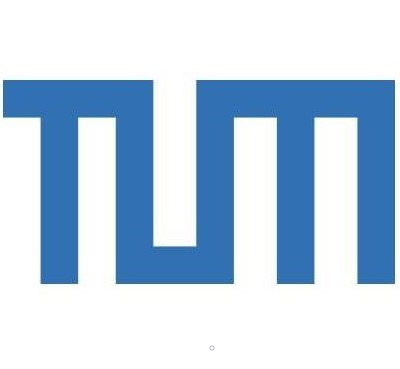
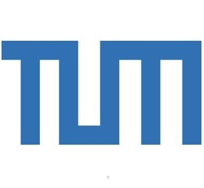

I am a first-year Ph.D. student at the
Bosch Center for Artificial Intelligence (BCAI),
supervised by Dr.
Maxim Dolgov.
I am also studying in the Department of Computer Science at the
University of Stuttgart
under the supervision of Prof.
Marco Aiello
from the
Institute of Architecture of Application Systems (IAAS).
My research interests include 3D computer vision, prediction, and planning in autonomous driving.
Before this, I spent five and a half years completing my bachelor's and master's degrees at Technical University of Munich (TUM).
I was fortunate to have my bachelor's thesis advised by Prof. Gerhard Rigoll. And my master thesis is advised by Jiapeng Tang and Prof.
Matthias Nießner in the Visual Computing & Artificial Intelligence Group.

|
What Matters to Enhance Traffic Rule Compliance of Imitation Learning for Automated Driving
Hongkuan Zhou*, Aifen Sui*, Wei Cao*, Zhengshan Bing
(*equal contribution)
Arxiv Preprint
[project page]
[paper]
[code]
|
University of Stuttgart, Stuttgart, Garmany
(Mar. 2024 - Present)
-
Doctor of Philosophy in Computer Science
- Major Orientation: Prediction and Planning in Autonomous Driving
|
|
|
Technical University of Munich, Munich, Germany (Oct. 2021 - Feb. 2024)
-
Master of Science in Informatics
- Major Orientation: Robotics, Cognition, Intelligence
- Master thesis: "Deformable Object Reconstruction and Tracking using Diffusion Models"
|
|
|
Technical University of Munich, Munich, Germany (Oct. 2018 - Sep. 2021)
-
Bachelor of Electrical and Computer Engineering
- Major Orientation: Speech Recognition
- Master thesis: "Modeling Localness for Transformer Models in Speech Recognition"
|
|
|
Bosch Research, Renningen, Germany (Mar. 2024 - Current)
- Position: PhD Student
- Supervisor: Dr.
Maxim Dolgov
- Project: Closed-loop Planning for Urban Automated Driving
|
|
|
TUM, Munich, Bayern, Germany (Sep. 2023 - Mar. 2024)
|
|
|
Huawei, Munich, Germany (Dec. 2022 - May. 2023)
- Position: Research Scientist Intern at Huawei 2012 Lab
- Supervisor: Dr. Aifen Sui , Dr.
Feixiang Ge
- Project: End-to-end Autonomous Driving
|
|
|
Italian Institute of Technology(IIT), Genova, Italy (Apr. 2022 - Sep. 2022)
- Position: Research Intern
- Supervisor: Dr. Yiming Wang
- Project: Next Best View with Implicit Neural Representation
|
|
|
BMW, Munich, Germany (Sep. 2020 - Feb. 2021)
- Position: Working Student at department of On-Demand Mobility
- Project: Java-based vehicle simulator/mock-up App
|
|
|
Teaching
Miscellaneous
- Snowboarder, Level 1 Snowboard Instructor of the Canadian Association of Snowboard Instructors (CASI)
- Marathon Runner
|
|
|
Last update: Jun. 9, 2024